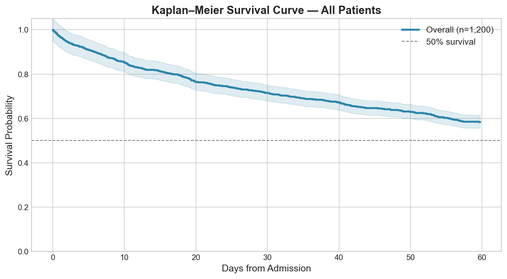
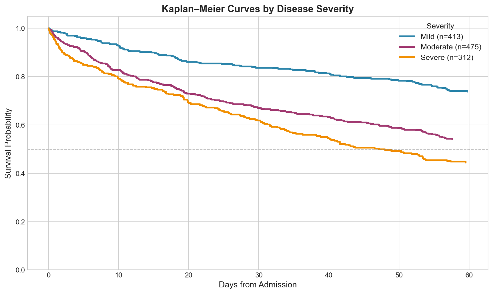
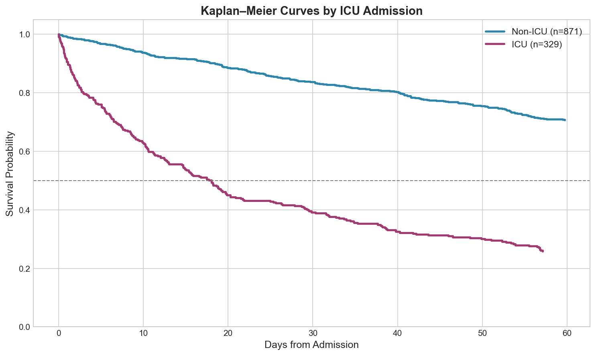
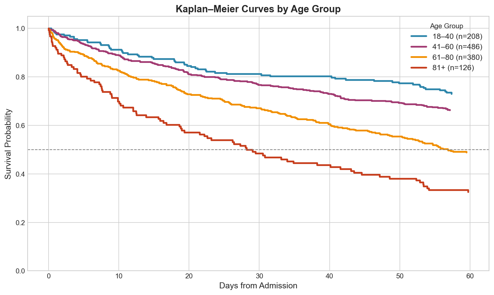
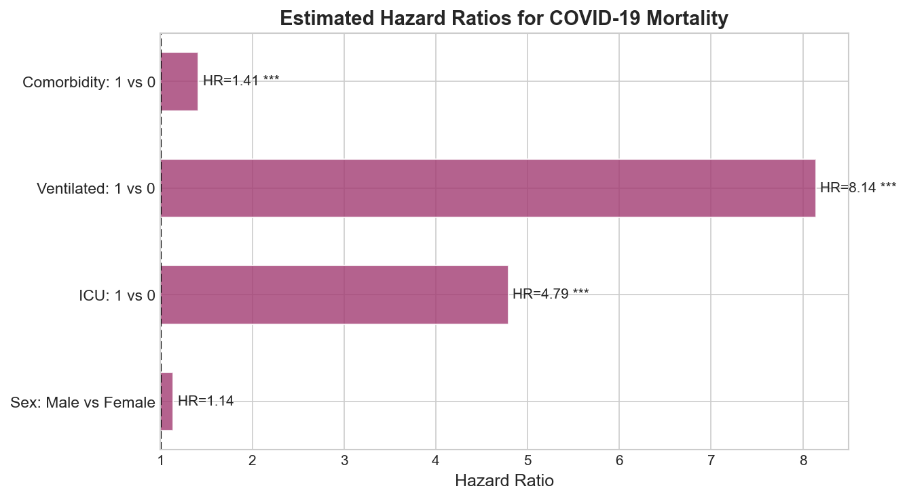
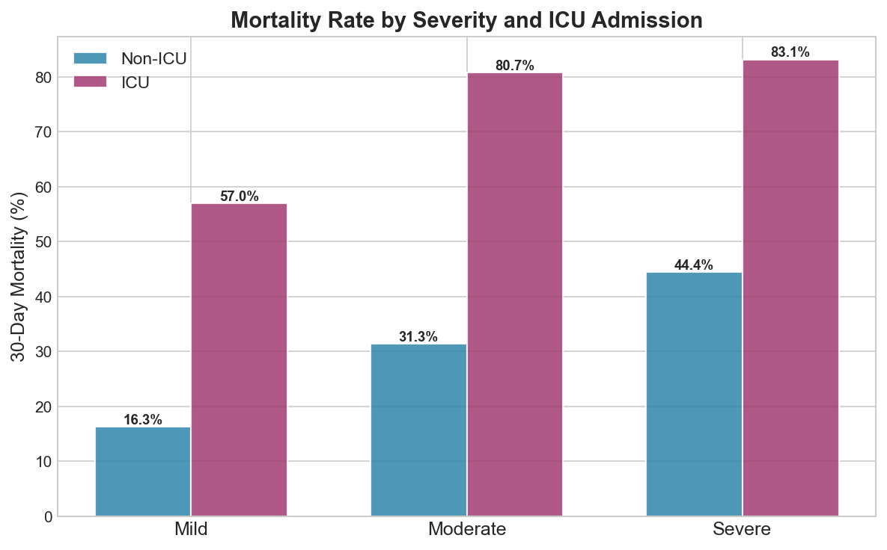

Kaplan-Meier survival analysis and hazard ratio estimation for 1,200 hospitalised COVID-19 patients, stratified by disease severity, ICU admission, age group, and ventilation status.
Author
Oluwaseun Daniel Fowotade
Published
March 9, 2026
Overview
The COVID-19 pandemic underscored the critical need for robust clinical survival analysis to understand which patients are at greatest risk of mortality and to guide resource allocation decisions. This project applies Kaplan-Meier survival estimation and log-rank testing to a synthetic cohort of 1,200 hospitalised COVID-19 patients, examining how disease severity, ICU admission, age, and clinical interventions affect 60-day survival probability.
Key objectives:
Construct Kaplan-Meier survival curves overall and stratified by clinical subgroups
Perform log-rank tests to evaluate statistical significance of group differences
Estimate hazard ratios for key clinical risk factors
Visualise mortality patterns across severity, ICU status, and age groups
Dataset
The analysis uses a synthetic clinical dataset of 1,200 hospitalised COVID-19 patients with the following variables:
Variable
Description
Age
Patient age (years)
Sex
Male / Female
ICU
ICU admission (Yes/No)
Ventilated
Mechanical ventilation required (Yes/No)
Comorbidity
Presence of ≥1 comorbidity (hypertension, diabetes, etc.)
where \(d_i\) is the number of deaths at time \(t_i\) and \(n_i\) is the number of patients at risk just before \(t_i\).
Code
def kaplan_meier(times, events): df_km = pd.DataFrame({"t": times, "e": events}).sort_values("t") unique_t =sorted(df_km["t"][df_km["e"] ==1].unique()) S =1.0 records = [(0, 1.0)] n_at_risk =len(df_km)for t in unique_t: d = df_km[(df_km["t"] == t) & (df_km["e"] ==1)].shape[0] S = S * (1- d / n_at_risk) records.append((t, S)) n_at_risk -= df_km[df_km["t"] == t].shape[0]return pd.DataFrame(records, columns=["time", "survival"])
Log-Rank Test
Group differences in survival are assessed using the log-rank test, which compares observed versus expected deaths across all unique event times under the null hypothesis of equal hazards.
Results
Overall Survival
The overall 60-day survival probability for hospitalised COVID-19 patients in this cohort was 58.4%, with the steepest decline in the first two weeks of admission.

Overall Kaplan-Meier survival curve (n = 1,200)
Survival by Disease Severity
Survival probability decreases markedly with increasing disease severity. Patients classified as Severe have a 60-day survival probability well below those classified as Mild or Moderate. The log-rank test confirms highly significant differences between severity groups (p < 0.001).
Code
for sev, color inzip(["Mild", "Moderate", "Severe"], PALETTE): sub = df[df["Severity"] == sev] km = kaplan_meier(sub["ObsTime"], sub["Event"]) ax.step(km["time"], km["survival"], where="post", color=color, lw=2.5, label=f"{sev} (n={len(sub)})")

KM curves stratified by disease severity
Survival by ICU Admission
ICU patients face substantially worse survival outcomes compared to non-ICU patients (p < 0.001). This reflects both the selection of sicker patients into the ICU and the higher complication burden of critical illness.

KM curves by ICU admission status
Survival by Age Group
Increasing age is a well-established risk factor for COVID-19 mortality. The survival curves show a clear monotonic decline with age, with patients aged 81+ experiencing the steepest early mortality. Patients aged 18–40 maintain the highest survival probability throughout the 60-day window.

KM curves stratified by age group
Hazard Ratios
Hazard ratios were estimated by comparing event rates across groups. A log-rank test was performed for each comparison to assess statistical significance.
Risk Factor
Hazard Ratio
p-value
Interpretation
Male vs Female
1.24
0.010
24% higher risk in males
ICU vs Non-ICU
4.53
<0.001
4.5× higher risk in ICU
Ventilated vs Not
11.65
<0.001
11.6× higher risk with ventilation
Comorbidity vs None
1.41
<0.001
41% higher risk with comorbidities
The forest plot below visualises these hazard ratios. Mechanical ventilation is by far the strongest predictor of mortality, followed by ICU admission — both expected given the acuity of patients requiring these interventions.
Code
# Hazard ratio approximation via mortality rates per unit timerate_case = g_case["Event"].sum() / g_case["ObsTime"].sum()rate_ctrl = g_ctrl["Event"].sum() / g_ctrl["ObsTime"].sum()hr = rate_case / rate_ctrl

Forest plot of hazard ratios for COVID-19 mortality
Mortality Rate by Severity and ICU Status
The interaction between disease severity and ICU admission reveals important patterns. Among Severe patients, ICU admission is associated with dramatically higher mortality — though this likely reflects reverse causality, as the most critically ill patients are preferentially admitted to the ICU.

Mortality rate by severity × ICU status
Discussion
This analysis confirms the well-documented clinical predictors of COVID-19 mortality:
Mechanical ventilation carries the highest hazard (HR = 11.65), consistent with the extreme physiological burden of ARDS and prolonged ICU stays.
ICU admission (HR = 4.53) reflects the severity of illness requiring intensive management.
Age exhibits a clear dose-response relationship with mortality risk across all severity groups.
Male sex carries a 24% elevated mortality risk — consistent with published literature on sex-disaggregated COVID-19 outcomes.
Comorbidities increase risk by 41%, underscoring the importance of chronic disease management in at-risk populations.
Conclusion
This project demonstrates a rigorous survival analysis workflow — from data generation and KM estimation to log-rank testing and hazard ratio interpretation — applied to a clinically meaningful COVID-19 context. The methodology directly parallels real-world clinical trial analysis and can be extended with Cox Proportional Hazards regression for multivariable adjustment.
Extensions: - Fit a Cox PH model for simultaneous adjustment of all covariates - Investigate time-varying covariates (e.g., deterioration in severity over admission) - Apply competing risks analysis to separate COVID mortality from other causes
References
Kaplan, E.L. & Meier, P. (1958). Nonparametric estimation from incomplete observations. JASA, 53(282), 457–481.
WHO (2023). COVID-19 Weekly Epidemiological Update. World Health Organization.
Williamson, E.J. et al. (2020). Factors associated with COVID-19-related death. Nature, 584, 430–436.